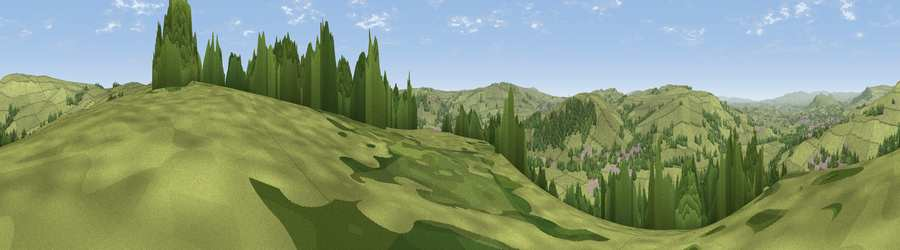

Viewpoint near Low Bradley
#19724 in England · top 33% of its area beats it · near Low BradleyWhere it is
The exact computed spot (SE 00675 47525). Click the marker for map links.
The view, rendered

A 360° render of this exact spot computed from the terrain model, tree cover and land cover — summer colours, afternoon light, calibrated against photographs of famous viewpoints. Real trees, hedges and buildings will differ in detail.
The panorama
Grey silhouette: terrain skyline in each direction (720 bearings, Earth curvature and refraction included). Dashed green: skyline with trees (+15 m) and buildings (+8 m) as obstacles. Blue strip: how far the ground is visible on each bearing.
Where the view opens
Wedge length = distance to the farthest visible ground on that bearing (vegetation-aware). Rings at 10, 25 and 50 km.
What fills the view
79% grassland · 17% woodland · 3% built-up
Angular shares of the visible panorama (visual magnitude), not map area. Landscape diversity 0.27 (0–1 Shannon).
Key numbers
More beautiful places nearby
The staircase of upgrades: each row has a higher view potential than everything closer. Driving times are estimates from straight-line distance, calibrated against real road routing — check an actual route before setting out.
| Place | Direction | Drive | Score |
|---|---|---|---|
| Viewpoint near Low Bradley | NE · 2 km | ~5 min | 55.9 |
| Viewpoint near Low Bradley | N · 3 km | ~7 min | 66.3 |
| Viewpoint near Skipton | NNE · 3 km | ~8 min | 68.0 |
| Viewpoint near Lothersdale | W · 6 km | ~13 min | 70.5 |
| Viewpoint near Embsay | NNW · 9 km | ~17 min | 74.5 |
| Cracoe Fell | N · 11 km | ~21 min | 75.1 |
| Viewpoint near Otley | E · 20 km | ~33 min | 77.5 |
| Little Ingleborough | NW · 37 km | ~56 min | 78.8 |
53.92386, -1.99121 · source: screening · position refined by local search. Computed location — check access rights before visiting.